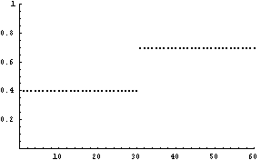
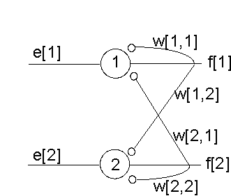
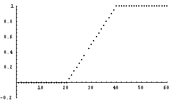
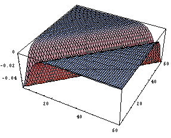
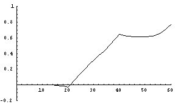
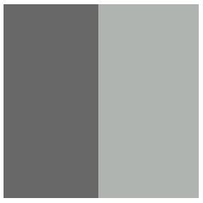

The related Mathematica codes can be found here.
The Limulus equation can be modeled by the following linear recurrent network (two units are shown)

If the matrix W has eigenvalues with magnitude smaller than 1, then iterating the Limulus equation
f = e + W.f
will lead to a converged solution f=(I-W)-1e
Let us consider a one dimensional example, where the input e is given by

and the weights are given by
W(i,j)= -wmaxexp(-(i-j)2/2s2)

After iterating the Limulus equation to convergence, the output f (starting from a random vector) looks like

(With wmax=0.05 and s=5). About ten iterations are enough for convergence.
Note the edge-enhancement due to lateral inhibition.
Another example

Input Output

Hermann grid

Notice the phantom dark spots where the white lines cross.
Can you explain it using lateral inhibition?
Winner-take-all network
Sometimes one would like to have a network that takes in a range of inputs, but output the biggest value. Linear recurrent network with lateral inhibition can be set up to approximate the winner-take-all network
| Inhibition strength needs to be large | |
| No self-inhibition |
Let us consider the following example


In this case the weights are given as

For the iteration to converge, we use the following iteration scheme
f <- f+e(e + W.f-f)